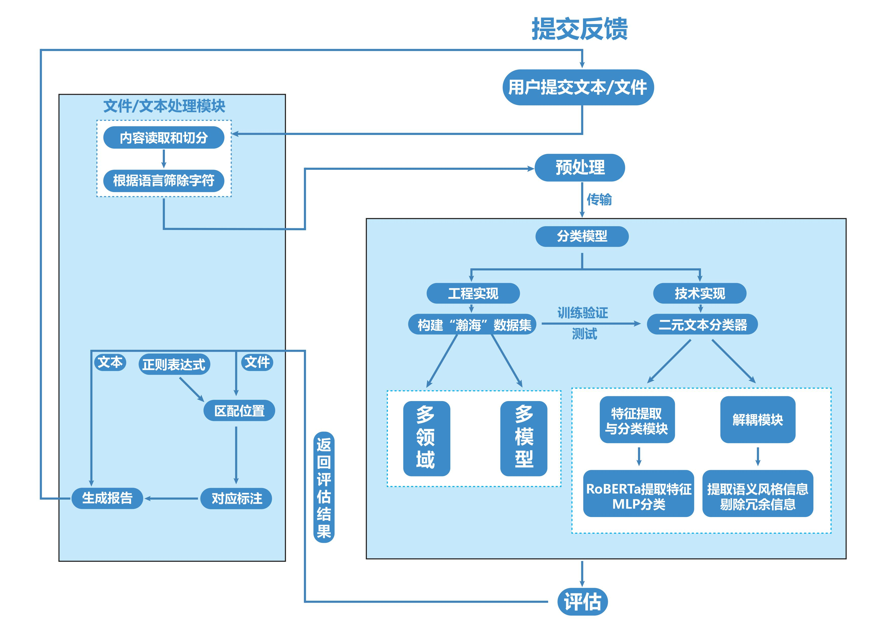
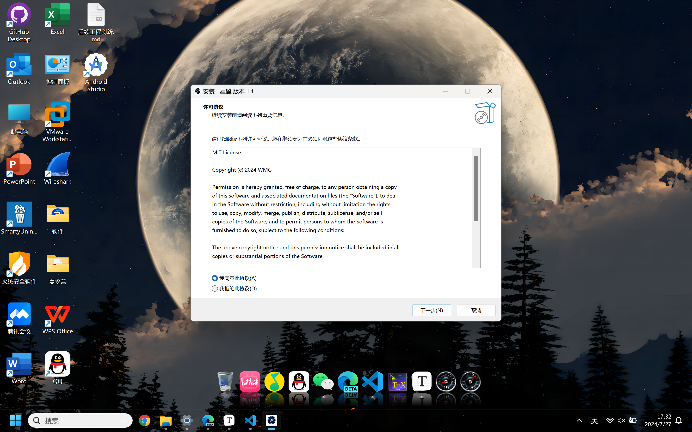
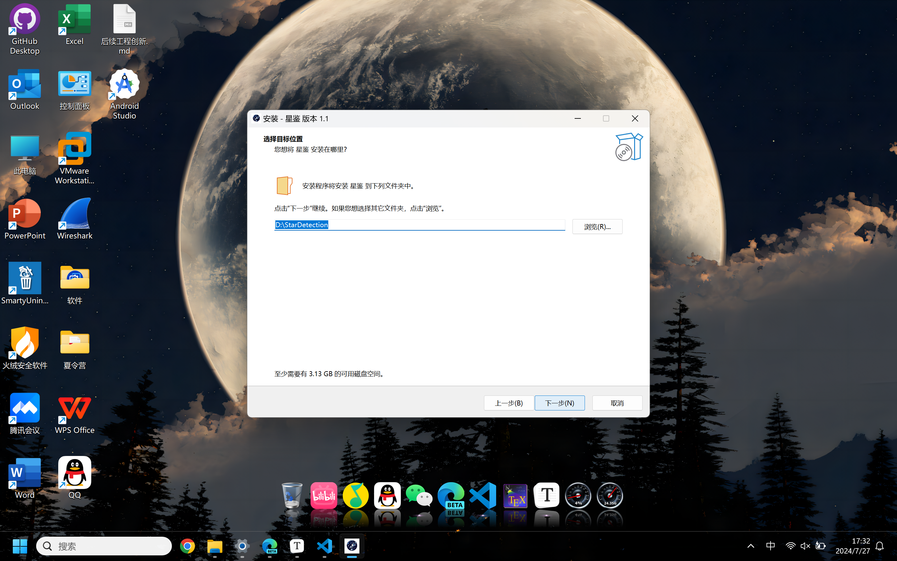
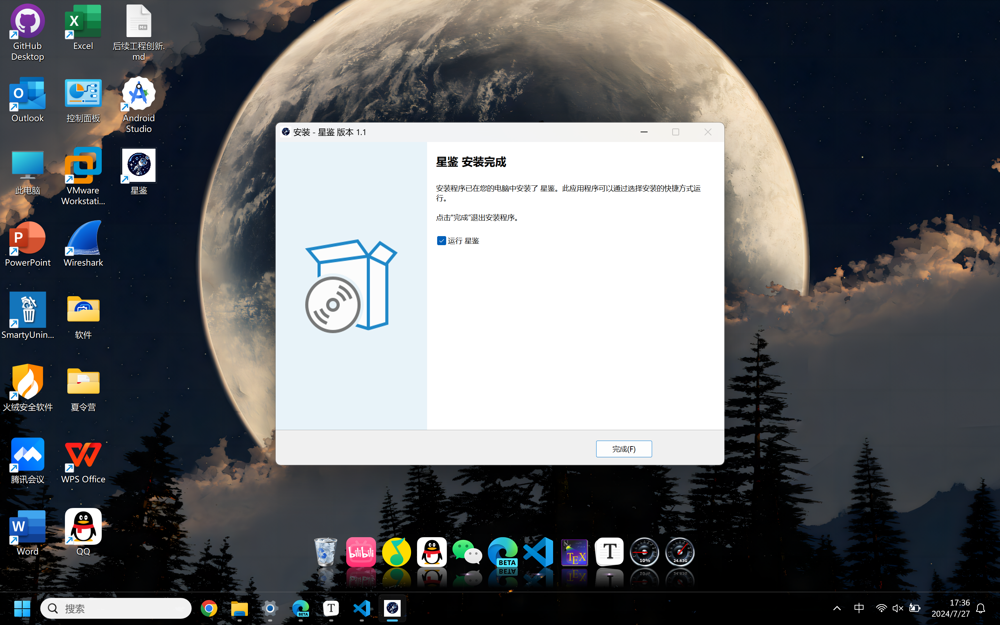
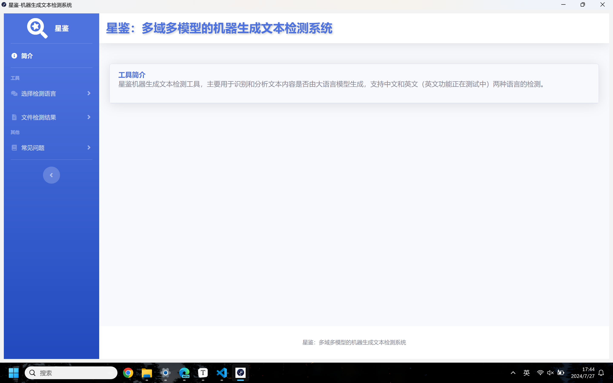

星鉴—多域多模型的机器生成文本检测系统
系统介绍
星鉴项目旨在实现对机器生成文本的检测。通过Zero-Shot和监督学习结合的方法，星鉴可以准确高效地区分多领域多模型的人类文本和机器生成文本。本项目适用于需要识别AI生成内容的各类应用场景。
系统架构
本项目基于Flask架构的前后端交互设计，用户通过前端页面交互，后端处理前端返回的文本或者文件，并将结果返回前端展示。

系统功能
系统支持中英文两种语言检测，同时支持用户上传文件进行检测，文件格式支持包括.txt, .docx, .pdf
| 功能列表 | 功能描述 |
|---|---|
| 文本检测功能 | 用户在客户端输入一段文本，检测完成后会返回一个这段文本由机器生成的概率 |
| 文件检测功能 | 长文本用户可以上传 PDF, DOCX 和 TXT 格式的文件，检测完成后会返回标注过的文件 |
| 深度文本分析 | 文本检测完成会告知用户各个段落由机器生成的概率，并标识各个成分的占比 |
| 文件标注功能 | 根据不同段落评估概率，标注高亮，并在侧面标注生成概率（PDF, DOCX）或直接标注概率（TXT） |
系统部署
本项目支持源代码部署以及Windows平台可执行程序.exe以及Android平台安装包.apk的安装。
源代码部署
git clone https://github.com/ayakacxy/star_detection.git
cd star_detection
本地已经安装Anaconda, 那么创建一个新的环境并激活
conda create --name star python=3.10
conda activate star
安装对应的依赖
pip install -r requirements
运行项目
python app.py
注意事项
- 项目运行的日志输出存储在config/log.jsonl文件中，对应的报错信息可以检查日志文件进行调试。
- 部分功能需要使用到Windows自带的字体文件，如果报错可以修改成本机自带的字体。
- DOCX文件的检测需要本地存在microsoft office，如果未安装，建议自行把DOCX文件转换为PDF文件或者直接复制对应的文本进行检测。
Windows平台可执行程序安装
-
先从该链接下载我们的可执行程序星鉴
-
下载之后双击
StarDetection.exe进行安装
-
选择安装语言

-
用户协议以及安装位置选择，默认安装在
D盘 -
创建快捷方式，并运行星鉴

安装成功运行结果如下所示
网页端访问
直接输入网址即可访问
Android端安装
在该链接下载，安装即可。
使用指南
所有平台都是基于同一套操作以及交互逻辑，所以这里仅以本地为示范